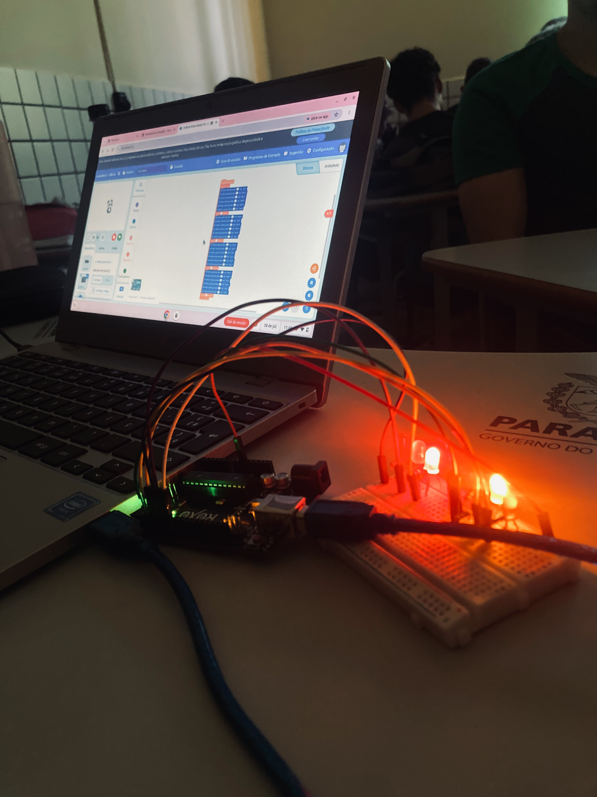

Projeto Integrador
Tecnologia, robótica e acessibilidade visual.
Anatomia do Olho
O olho é o órgão responsável pela visão. A córnea permite a entrada da luz, a íris controla a quantidade de luz, o cristalino ajuda no foco e a retina transforma a luz em sinais nervosos.
Esses sinais são enviados pelo nervo óptico ao cérebro, que interpreta as informações e forma as imagens que enxergamos.
Tecnologias para Correção Visual
Existem diversas tecnologias utilizadas para corrigir problemas de visão, como óculos, lentes de contato, cirurgias a laser e lentes intraoculares.
Essas tecnologias ajudam pessoas com miopia, hipermetropia, astigmatismo e presbiopia.
Importância da Robótica
A robótica pode contribuir para a inclusão e a acessibilidade. No nosso projeto, utilizamos LEDs controlados por PWM, permitindo controlar sua intensidade.
O efeito LED Fade Out diminui o brilho do LED gradualmente, tornando a iluminação mais confortável.
Semáforo Inteligente
Desafio
Desenvolver um protótipo de semáforo para ajudar pessoas com deficiência visual a atravessarem a rua com mais segurança.
Funcionamento
- Luzes verde, amarela e vermelha;
- Botão para solicitar a travessia;
- Sinal sonoro para auxiliar o pedestre;
- Controle do tempo de travessia.
Objetivo
Aplicar conhecimentos de programação, eletrônica e robótica para criar uma solução de acessibilidade e segurança no trânsito.
Imagens e Vídeos do Projeto


Gráficos das Pesquisas